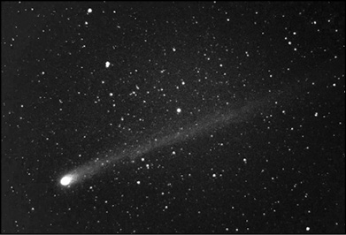

1. Bölüm - EVREN NEDİR?
1- Evren nedir?
Evren’in ne olduğuna ilişkin düşünce ve inançlar çok çeşitlidir. Toplumdan topluma ve tarih boyunca da değişmiştir. Bir de bilimin ortaya koyduğu, binlerce bilim insanının ortaklaşa çabasıyla yüzlerce yılda ortaya çıkarılmış bir evren resmi vardır. Buna göre Evren genellikle, “geçmişte var olmuş, bugün var olan ve gelecekte var olacak her şeyin oluşturduğu bütünlük” olarak tanımlanır. Bu “her şey”in içine bütün madde (gezegenler, yıldızlar, gökadalar ve gökadalar arası madde) ve enerji girer. Evren’in ne kadar büyük olduğu, kaç yaşında olduğu, içeriğinin ne olduğu ve sonunun nasıl olacağı gibi büyük sorulara hâlâ yoğun bir şekilde yanıt aranmaktadır.
Gökbilim gözlemlerinin son yorumlarına göre Evren’imiz 13,75±0,11 milyar yaşındadır. Yani genel kabul gören bilimsel evren modeli her şeyin 13,75 milyar yıl önce tek bir noktadan ortaya çıktığını, zamanın o anda akmaya başladığını ve o tarihten bu yana da Evren’in sürekli genişlediğini ve değiştiğini söyler. Ancak büyüyen, genişleyen Evren’in bir merkezi ya da kenarları yoktur.
Genişleyen Evren’imizin bize uzak bölgeleri, yakın bölgelere göre daha hızlı genişler, bizden uzaklaşır. 2011’in başlarında keşfedilen UDFj-39546284 adlı gökada şimdiye değin keşfedilen en uzak gökadadır. Onun, Büyük Patlama’dan yalnızca 480 milyon yıl sonra yola çıkan ve 13,27 milyar yıl boyunca Evren’de yol alan ışınlarından bazıları Hubble Uzay Teleskopu’nca yakalanmıştır. Bu gökada şu anda bizden 31,7 milyar ışık yılı ötededir -ışınların yolda geçirdiği 13,27 milyar yıl boyunca Evren durmamış, genişlemiştir.
Görüşümüz içinde kalan, gözleyebildiğimiz ve hakkında bilgi edinebildiğimiz Evren bölgesine “gözlemlenebilir Evren” denir. Bu varsayımsal yapı, Dünya’nın merkezde olduğu bir küre şeklindedir. Kürenin sınırlarına yakın bölgelerden bize gelen ışıklar, 13,75 milyar yıldır yol almaktadır. Ancak o nesneler bugün 13,75 milyar ışık yılından daha uzaktır. Çünkü o kadar yıl boyunca Evren, genişlemesini sürdürmüştür. Yapılan hesaplara göre gözlemlenebilir Evren’in yarıçapı 46 milyar ışık yılıdır. Bir başka deyişle Evren’de görebildiğimiz her şey 92 milyar ışık yılı çaplı bir kürenin içinde yer alır.
2- Uzay nedir?
Gökcisimlerinin atmosferlerinin ötesindeki bölgeye uzay denir. Bir anlamda uzay bizim için Dünya atmosferinin sona erdiği noktanın ötesidir. Ne var ki atmosferimizin bittiği ve uzayın başladığı keskin bir hat yoktur; geçiş aşamalıdır. Atmosferin yoğunluğu Dünya’dan uzaklaşıldıkça giderek azalır ve sonunda gezegenler arası uzayın madde yoğunluğuna düşer. “Atmosferin nerede bittiği, uzayın nerede başladığı” belirsizliğiyle birlikte, bilim insanları arasında karman hattı diye bilinen ve uzayın başladığı sınır olarak kabul edilen bir yükseklik de vardır. Bu yükseklik 100 km’dir. Yani uzay Yer’den yalnızca 100 km ötededir. Ünlü gökbilimci Carl Sagan’ın dediği gibi, eğer otomobilinizi yere dik konuma getirip havada ilerleyebilseniz, yaklaşık bir saat sonra uzaya varabilirsiniz. Uzay aslında çok yakındır.
Uluslararası Uzay İstasyonu yerden 350 km yukarıda, Hubble Uzay Teleskopu 560 km yukarıda ve ilk yerli Dünya gözlem uydumuz RASAT da 700 km yukarıda dönmektedir.
3- Uzay ne kadar boştur?
Uzayın yapısı ve içeriği bilim insanlarının merakını binlerce yıldır çekmiştir. 1900’lü yılların başından önce yaklaşık 2000 yıl boyunca uzayın, eter diye bilinen görünmez bir maddeyle dolu olduğu ve ışık dalgalarının da onun içinde ilerlediği düşünülürdü. Ancak elektromanyetik kuram ve görelilik kuramlarıyla birlikte ışığın ilerlemesi için herhangi bir ortama gereksinim olmadığı ve uzayın da “boş” olduğu anlaşıldı.
Her ne kadar mükemmel “boşluk”a en yakın ortam olsa da, uzay tümüyle boş değildir. Uzayın değişik bölgelerinde, “boş”luk düzeyi, yani bulunan madde miktarı, farklıdır. Örneğin Dünya ile Mars arasındaki uzay ile Güneş ile Akyıldız (Sirius) arasındaki uzay ya da Samanyolu ile Andromeda Gökadası arasındaki uzay, aynı boşlukta –ya da dolulukta– değildir.
Dünya’da deniz düzeyindeki havada metreküpte yaklaşık 1025 atom vardır. Gezegenler arası uzayda, yani Güneş Sistemi’nin sınırları içinde, metreküpte ortalama 5 ila 100 milyon (106-108) kadar atom olur. Bunun yanında kilometreküpte 1000 dolayında toz parçacığı bulunur.
Samanyolu’ndaki kütlenin büyük bölümü yıldızlarda toplanmıştır. Geri kalanı da yıldızlar arası uzaya yayılmış gaz ve toz halindedir. Yıldızlar arası uzay, gezegenler arası uzaya göre daha “boş”tur. Samanyolu’nun yıldızlar arası ortamındaki ortalama madde yoğunluğu ortalama olarak metreküpte bir milyon atomdur; yani 1 atom/cm3. Toz yoğunluğuysa kilometreküpte 100 toz parçacığı kadardır. Bu sayılar çok küçük görünebilir, ama Samanyolu’ndaki toplam maddenin yaklaşık yüzde 10’unu gaz ve toz oluşturur. Buna, yıldızlar arası madde de denir. Madde miktarı Samanyolu’nun ötesindeki gökadalar arası uzayda çok daha azdır.


Uzay tozu ya da kozmik toz birkaç molekül ile 0,1 mm arasındaki büyüklüklerdeki madde parçalarına denir. Uzay tozu bir zamanlar gökbilimciler için gözlemlerini olumsuz etkileyen bir öğeydi. Artık yıldızlar arası uzaydaki birtakım astrofiziksel süreçlerin temel etkenlerinden biri olarak ele alınıyor. Örneğin yıldızların ve gezegenlerin oluşumlarının en önemli öğelerinden biri olduğu biliniyor. Güneş Sistemi içinde de, başta Satürn olmak üzere, gaz devi dört gezegeni kuşatan halkaların yapıtaşlarından biri de uzay tozudur. Kuyrukluyıldızların kuyruklarını da uzay tozu oluşturur. Güneş Sistemi araştırmalarında kullanılan birçok uzay aracında özel geliştirilmiş uzay tozu saptama ve toplama aygıtları vardır.
4- Bulutsu nedir?
Samanyolu’ndaki gaz ve tozun küçük bir bölümü yıldızlar arası uzaya seyreltik ve homojen olmayan bir şekilde dağılmıştır. Büyük bölümüyse bazı bölgelerde toplanmış olarak, dev bulutlar biçiminde bulunur. Başta hidrojen ve helyum olmak üzere, gazlardan ve kozmik tozlardan oluşan bu dev bulutlara Latince’de “bulut” anlamına gelen nebula denir. Bunlara Türkçede bulutsu diyoruz. Bulutsular antikçağın büyük bilim insanı Ptolemaios’tan (Ptolemy ya da Batlamyus olarak da bilinir) bu yana, yaklaşık 2000 yıldır biliniyor. Yıldızlardan gelen ışıkların önünü kesen karanlık bulutsuların ilk görüntüleri, teleskoplu gözlemlerde fotoğraf makinelerinin kullanılmaya başlamasıyla birlikte elde edilmiştir. Spektroskopi sayesinde de, 1900’lü yılların başında içerdikleri maddeler anlaşılmıştır. Bulutsular çok büyük hacimleri kaplayan, birkaç ışık yılından birkaç yüz ışık yılına kadar değişen çaplarda, ama yoğunlukları çok düşük olan yapılardır.
Bulutsular gökadanın her yanına dağılmıştır. Saman-yolu’nun belki de en fotojenik nesneleridir. Çok değişik şekillerde olurlar. Bu da hâlâ tatmin edici bir açıklama bulunamamış bir konudur. Gökbilimciler onlara birer numara vererek kataloglar; ama çoğunun şekillerinden kaynaklanan

Yıldız rüzgârları, gezegenimsi bulutsular ve süpernovalar gökadaların içindeki yıldızlar arası ortamı, madde açısından sürekli zenginleştirir. Yıldızların oluşumu sırasında yıldızlar arası ortamdan toplanan madde, yıldızların ölüm süreçlerinde ortama geri verilir. Yaşamları boyunca yıldızların içinde hidrojen ve helyumdan ağır elementler oluştuğundan, bu madde çevrimi sayesinde gökada içindeki ağır elementlerin miktarı artar. Bir süre sonra oluşan yeni yıldızlarda ve gezegen sistemlerinde artık bu elementler de bulunur. Aşağıda 6500 ışık yılı ötemizdeki Yengeç Bulutsusu görülüyor. 1054’te patlayan bir yıldızın kalıntısı olan, 11 ışık yılı çapındaki bulutsu, hâlâ saniyede 1500 km hızla genişliyor. Bulutsunun merkezinde, kendi ekseninde saniyede 30 kez dönen bir nötron yıldızı vardır.
takma adları da vardır: Kedi Gözü Bulutsusu, Kelebek Bulutsusu, Kartal Bulutsusu, At Başı Bulutsusu vs. Bulutsular yeni yıldızların doğum yerleridir. Bununla birlikte bazı bulutsular da yıldızların ölümleri sırasında oluşur.
Yıldızlar arası ortamdaki gazların kütlesi tozun kütlesinin 100 katı kadardır. Gazın, tıpkı yıldızlarda olduğu gibi, yüzde 70’ini hidrojen, yüzde 28’ini helyum ve yüzde 2’sini de öteki elementler oluşturur. Bu hidrojen ve helyumun büyük bölümü Samanyolu’nun yaklaşık 13 milyar yıl öncesinden, oluşum döneminden kalmıştır. Küçük bölümü de yıldızlardan, yıldız rüzgârı olarak ya da ölümleri sırasındaki etkinliklerde, uzaya saçılmıştır.
Bulutsularda yer almayan ve gökadaya yayılmış olan gazlar, yıldızlardan gelen morötesi ışınlar nedeniyle iyonize olmuş, oldukça sıcak ama çok seyreltik gazlardır; yoğunlukları 0,1 atom/cm3 kadardır.
Yıldızlar arası maddeyi daha iyi tanımak ve anlamak aslında yıldız oluşumunu ve evrimini, dolayısıyla da gökada evrimini anlamayı sağlar.